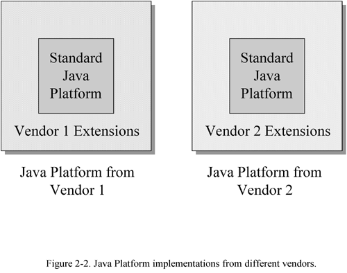

02 Platform Independence
- Why Platform Independence?
- Java's Architectural Support for Platform Independence
- Scalability
- Factors that Influence Platform Independence
- Seven Steps to Platform Independence
- The Politics of Platform Independence
- The Resources Page
The last chapter showed how Java's architecture makes it a useful tool for developing software solutions in a networked environment. The next three chapters take a closer look at how Java's architecture accomplishes its suitability for networks. This chapter examines platform independence in detail. It shows how Java's architecture enables programs to run on any platform, discusses the factors that determine the true portability of Java programs, and looks at the relevant tradeoffs. 第一章，主要讲Java's architecture，接下来三章围绕着Java's architecture如何满足networks来展开；本章主要讲platform independence
Why Platform Independence?
One of the key reasons Java technology is useful in a networked environment is that Java makes it possible to create binary executables that will run unchanged on multiple platforms. This is important in a networked environment because networks usually interconnect many different kinds of computers and devices. An internal network at a medium-sized company might connect Macintoshes in the art department, UNIX workstations in engineering, and PCs running Windows everywhere else. Also, various kinds of embedded devices, such as printers, scanners, and fax machines, would typically be connected to the same network. Although this arrangement enables various kinds of computers and devices within the company to share data, it requires a great deal of administration. Such a network presents a system administrator with the task of keeping different platform-specific editions of programs up to date on many different kinds of computers. Programs that can run without change on any networked computer, regardless of the computer's type, make the system administrator's job simpler, especially if those programs can actually be delivered across the network. 在networked environment中，Java technology成功的一个重要原因是，Java程序不需要修改，就可以在多个不同的平台上运行。
On the developer's side, Java can reduce the cost and time required to develop and deploy applications on multiple platforms. Even though historically, many (or most) applications have been supported on only one platform, often the reason was that the cost involved in supporting multiple platforms wasn't worth the added return. Java can help make multi-platform support affordable for more types of programs. 从软件开发者的角度来说，实现在多个不同平台部署，使用Java可以节省资金投入和时间投入。
For software developers, Java's platform independence can be both an advantage and a disadvantage. If you are developing and selling a software product, Java's support for platform independence can help you to compete in more markets. Instead of developing a product that runs only on Windows, for example, you can write one that runs on Windows, Macintosh, UNIX, and OS/2. With Java, you can have more potential customers. The trouble is, so can everyone else. Imagine, for example, that you have focused your efforts on writing great software for OS/2. Java makes it easier for others to write software that competes in your chosen market niche. With Java, therefore, you may not only end up with more potential customers, but also with more potential competitors. Java's platform independence是好事，也是坏事
Java's Architectural Support for Platform Independence
Java's architecture facilitates the creation of platform-independent software, but also allows you to create software that is platform-specific. When you write a Java program, platform independence is an option. Java's architecture，可以创建platform-independent软件，也可以创建platform-specific软件。
Support for platform independence, like support for security and network-mobility, is spread throughout Java's architecture. All the components of the architecture--the language, the class file, the API, and the virtual machine--play a role in enabling platform independence. Java's architecture的四个部分，对于platform independence都发挥了作用。
The Java Platform
Java's architecture supports the platform independence of Java programs in several ways, but primarily through the Java Platform itself. The Java Platform acts as a buffer between a running Java program and the underlying hardware and operating system. Java programs are compiled to run on a Java Virtual Machine, with the assumption that the class files of the Java API will be available at run-time. The virtual machine runs the program; the API gives the program access the underlying computer's resources. No matter where a Java program goes, it need only interact with the Java Platform. It needn't worry about the underlying hardware and operating system. As a result, it can run on any computer that hosts a Java Platform. Java program --> JVM --> hardware and operating system
The Java Language
The Java programming language reflects Java's platform independence in one principal way:
the ranges and behavior of its primitive types are defined by the language.
In languages such as C or C++, the range of the primitive type int is determined by its size, and its size is determined by the target platform.
The size of an int in C or C++ is generally chosen by the compiler to match the word size of the platform for which the program is compiled.
This means that a C++ program might have different behavior when compiled for different platforms merely because the ranges of the primitive types are not consistent across the platforms.
For example, no matter what underlying platform might be hosting the program, an int in Java behaves as a signed 32-bit two's complement number.
A float adheres to the 32-bit IEEE 754 floating point standard.
This consistency is also reflected in the internals of the Java Virtual Machine,
which has primitive data types that match those of the language, and in the class file, where the same primitive data types appear.
By guaranteeing that primitive types behave the same on all platforms, the Java language itself promotes the platform independence of Java programs.
Java Language定义了the ranges and behavior of its primitive types
The Java Class File
As mentioned in the previous chapter, the class file defines a binary format that is specific to the Java Virtual Machine. Java class files can be generated on any platform. They can be loaded and run by a Java Virtual Machine that sits on top of any platform. Their format, including the big-endian order of multi-byte values, is strictly defined and independent of any platform that hosts a Java Virtual Machine. Java class file是在JVM的基础上运行的，与具体的硬件或操作系统没有直接关系。
Scalability
One aspect of Java's support for platform independence is its scalability. The Java Platform can be implemented on a wide range of hosts with varying levels of resources, from embedded devices to mainframe computers.
Even though Java first came to prominence by riding on top of a wave that was crashing through the desktop computer industry, the World Wide Web, Java was initially envisioned as a technology for embedded devices, not desktop computers. Part of the early reasoning behind Java was that although Microsoft and Intel had a dominant clutch on the desktop market, no such dominance existed in the embedded systems market. Microprocessors had been appearing in device after device for years--audio-video equipment, cell phones, printers, fax machines, copiers--and the coming trend was that, increasingly, embedded microprocessors would be connected to networks. An original design goal of Java, therefore, was to provide a way for software to be delivered across networks to any kind of embedded device--independent of its microprocessor and operating system. Java的设计初衷是运行在embedded device上
To accomplish this goal, the Java runtime system (the Java Platform) had to be compact enough to be implemented in software using the resources available to a typical embedded system. Embedded microprocessors often have special constraints, such as small memory footprint, no hard disk, a non-graphical display, or no display. Java runtime system占用空间要足够的小，才能运行在embedded system上
Given the special requirements of embedded systems, several incarnations of the Java Platform exist just for embedded systems:
- the Java Embedded Platform
- the Java Personal Platform
- the Java Card Platform
These Java Platforms are composed of a Java Virtual Machine and a smaller shell of runtime libraries than are available in the Java Core Platform. The difference between the Core and the Embedded Platform, therefore, is that the Embedded Platform guarantees the availability of fewer Java API runtime libraries. The Personal Platform guarantees fewer APIs than the Embedded Platform, and the Card Platform fewer than the Personal. Core > Embedded > Personal > Card
In addition to guaranteeing the smallest set of APIs, the Card Platform, which is targeted at SmartCards, uses only a subset of the full Java Virtual Machine instruction set. Only a subset of the features of the Java language are supported by this smaller instruction set. As a result, only Java programs that restrict themselves to features available on the Card Platform can run on a SmartCard. Card Platform不紧使用API数量少，而且使用的instruction set也少。
Because the Java Platform is compact, it can be implemented on a wide variety of embedded systems. The compactness of the Java Platform, however, does not restrict implementation at the opposite end of the spectrum. The Java Platform also scales up to personal computers, workstations, and mainframes. Java的可扩展性很强，小到embedded systems，大到mainframes。
Factors that Influence Platform Independence
When you write a Java program, its degree of platform independence depends on several factors. As a developer, some of these factors are beyond your control, but most are within your control. Primarily, the degree of platform independence of any Java program you write depends on how you write it. platform independence取决于多个因素。
Java Platform Deployment
The most basic factor determining the a Java program's platform independence is the extent to which the Java Platform has been deployed on multiple platforms. Java programs will only run on computers and devices that host a Java Platform. Thus, before one of your Java programs will run on a particular computer owned by, say, your friend Alicia, two things must happen. First, the Java Platform must be ported to Alicia's particular type of hardware and operating system. Once the port has been done by some Java Platform vendor, that port must in some way get installed on Alicia's computer. So a critical factor determining the true extent of platform independence of Java programs--and one that is beyond the control of the average developer--is the availability of Java Platform implementations and their distribution. 要想实现Java programs的platform independence，需要先将Java Platform（JVM和Java API）部署好。
Fortunately for the Java developer, the deployment of the Java Platform has proceeded with great momentum, starting with Web-browsers, then moving on to desktop, workstation, and network operating systems. With the advent of chips optimized to execute Java bytecodes efficiently, the Java Platform will to some extent work its way into many different kinds of embedded devices. It is increasingly likely, therefore, that your friend Alicia will have a Java Platform implementation on her computer. 所幸的是，Java Platform在许多的设备上都有部署。
The Java Platform Version and Edition
The deployment of the Java Platform is a bit more complicated, however, because not all standard runtime libraries are guaranteed to be available at every Java Platform. The basic set of libraries guaranteed to be available at a Java Platform is called the Java Core API. A Java Virtual Machine accompanied by the class files that constitute the Core API is called the Java Core Platform. This edition of the Java Platform has the minimum set of Java API libraries that you can assume will be available at network computers, desktop computers, and workstations. As mentioned earlier, three other editions of the Java Platform--the Embedded, Personal, and Card Platforms--provide subsets of the Core API for embedded systems. The standard runtime libraries not guaranteed to be available at the Core Platform are collectively called the Java Standard Extension API. These libraries include such services as telephony, commerce, and media such as audio, video, or 3D. If your program uses libraries from the Standard Extension API, it will run anywhere those standard extension API libraries are available, but not on a computer that implements only the basic Java Core Platform. Java API也分成不同的种类：Java Core API、Java Standard Extension API。
Another complicating factor is that in a sense the Java Platform is a moving target--it evolves over time. Although the Java Virtual Machine is likely to evolve very gradually, the Java API will probably change more frequently. Over time, features will be added to and removed from both the Core and Standard Extension APIs, and parts of the Standard Extension API may migrate into the Core API. The changes made to the Java Platform should for the most part be upwards compatible, meaning they won't break existing Java programs, but some changes may not be. As obsolete features are removed in a new version of the Java Platform, existing Java programs that depend upon those features won't run on the new version. Also, changes may not be downwards compatible, meaning programs that are compiled for a new version of the Java Platform won't necessarily work on an old version. The dynamic nature of the Java Platform complicates things somewhat for the developer wishing to write a Java program that will run on any computer. Java API包含的内容，也会随着时间的推进而发生变化。
In theory, your program should run on all computers that host a Java Core Platform so long as you depend only upon the runtime libraries in the Core API. In practice, however, new versions of the Core API will take time to percolate everywhere. When your program depends on newly added features of the latest version of the Java Core API, there may be some hosts that can't run it because they have an older version. This is not a new problem to software developers--programs written for Windows 95, for example, don't work on the previous version of the operating system, Windows 3.1--but because Java enables the network delivery of software, it becomes a more acute problem. The promise of Java is not only that it is easy to port programs from one platform to another, but that one version of a binary executable Java program placed on a server can be delivered across a network and run on all computers. 使用新版本的Java API编写的程序，可能无法在旧版本的Java API上运行。
As a developer, you can't control the release cycles or deployment schedules of the Java Platform, but you can choose the Java Platform edition and version that your programs depend upon. In practice, therefore, you will have to decide when a new version of the Java Platform has been distributed to a great enough extent to justify writing programs for that version. 作为开发人员，虽然不能决定部署环境使用什么版本的Java Platform，但是你可以选择使用较低版本的Java API来让程序有更好兼容性。
Native Methods
Besides the Java Platform version and edition your program depends on, the other major factor determining the extent of platform independence of your Java program is whether or not you call native methods. The most important rule to follow when you are writing a platform independent Java program is: don't directly or indirectly invoke any native methods that aren't part of the Java API. As you can see in Figure 2-1, calling native methods outside the Java API renders your program platform-specific. 另一个影响platform independence的重要因素是native methods。

Calling native methods directly is appropriate in situations where you don't desire platform independence. In general, native methods are useful in three cases:
- for accessing features of an underlying host platform that are not accessible through the Java API
- for accessing a legacy system or using an already existing library that isn't written in Java
- for speeding up the performance of a program by implementing time-critical code as native methods
If you need to use native methods and also need your program to run on several platforms, you'll have to port the native methods to all the required platforms. This porting must be done the old fashioned way, and once you've done it, you'll have to figure out how to deliver the platform-specific native method libraries to the appropriate hosts. Because Java's architecture was designed to simplify multi-platform support, your initial goal in writing a platform-independent Java program should be to avoid native methods altogether and interact with the host only through the Java API. 如果你的目标是想实现platform independence，那么就应该避免使用native methods。
Non-Standard Runtime Libraries
Native methods aren't inherently incompatible with platform independence. What's important is whether or not the methods you invoke are implemented "everywhere." Implementations of the Java API on operating systems such as Windows or Solaris use native methods to access the host. When you call a method in the Java API, you are certain it will be available everywhere. It doesn't matter if in some places the method is implemented as a native method. 这里讲到这样一个问题：其实调用不调用native methods本身并不是问题，真正重要的是这个native methods是不是在所有平台上都有实现。
Java Platform implementations can come from a variety of vendors, and although every vendor must supply the standard runtime libraries of the Java API, individual vendors may also supply extra libraries. If you are interested in platform independence, you must remain aware of whether any non-standard runtime libraries you use call native methods. Non-standard libraries that don't call native methods don't degrade your program's platform independence. Using non-standard libraries that do call native methods, however, yields the same result as calling native methods directly--it renders your program platform-specific. 如果你注重platform independence，就应该尽量避免使用non-standard runtime libraries中的native methods。
For example, Microsoft offers several sets of non-standard runtime libraries with their Java Platform implementation. One set is the Application Foundation Classes (or AFC). The AFC library is delivered along with the Java Platform implementation in Microsoft's Internet Explorer (Version 4.0 and beyond) web browser. The AFC library extends the capabilities provided by the standard runtime libraries of the Java API, but doesn't call native methods outside the Java API. The AFC library accesses the host only through the Java API. As a result, programs that use AFC should run on all implementations of the Java Platform. 这里举了个例子，微软的AFC，它的实现就是通过使用Java API来实现的，因此不影响platform independence。
One concern surrounding the use of a non-standard class library (such as AFC) that doesn't call native methods, is you must deliver it to Java Platforms that don't support it directly. For instance, imagine you write a Java program that uses AFC and make it available for download across a network. If you want the program to run on all platforms, you'll have to make the AFC classes available for download too. Compared to other browsers, the program might get started sooner at Microsoft's browser because it already has the AFC classes close at hand. Other browsers that don't store the AFC library locally would have to download the needed AFC classes across the network. Other than this potential difference in download time, using a non-standard library that interacts with the host only through the Java API won't reduce the platform independence of a Java program. To keep your program platform independent, however, you must deliver the library along with your program. 使用non-standard class library进行开发程序，例如微软的AFC，没有什么问题，但要确保这个类库已经完成部署。
One other Microsoft extension to the standard libraries of the Java Platform gives you a way to generate Java class files that grant access to COM (Component Object Model) objects. If you want to interact with a particular COM object, you use Microsoft's tool to generate a Java class file that gives your program a Java interface to the COM object. In effect, the generated class files form an extra runtime library that is available only at Microsoft's Java Platform implementation. Although this extra library offers more capabilities to Java programs, it reduces the platform independence of any Java program that takes advantage of it. Why? Because the extra libraries call native methods that are, initially at least, only available on Windows 95 and Windows NT. (In the future, Microsoft plans to port the Java/COM interface to non-Microsoft platforms.) Because the extra libraries provided by Microsoft use native methods that are specific to Microsoft operating systems, Java programs that use the extra libraries will only work on Microsoft operating systems. 这里又举了个例子，也是微软类库，这个类库就不能满足platform independence的要求。
Another potential ramification of using a vendor's non-standard runtime library that calls native methods directly is that your program will only work on that vendor's Java Platform implementation. For example, the class files described above that give your Java program access to COM objects use a special native method interface (the Java/COM interface) of Microsoft's Java Virtual Machine. Currently, this special native method interface is available only on Microsoft's virtual machine implementation on Windows 95 and Windows NT. Microsoft may port the Java/COM interface to other platforms, to increase the platform independence of programs that take advantage of it. But even if Microsoft is able to port it to every major platform, Java programs that use it will most likely only work properly when running on a Microsoft implementation of the Java Virtual Machine. 继续上一段内容，微软的类库，很可能只能在微软的操作系统中正常运行。
Because Java Platforms can come from different vendors, there can be different Java Platform implementations from different vendors for the same hardware and operating system. To run a Java program on Windows 95, for example, you could use a Java Platform from Sun, Microsoft, Borland, Symantec, or Asymetrix. The level of platform independence that a Java program has depends not only on how many different host computers it can run on, but also on how many different Java Platform implementations it can run on each host. 要实现platform independence，不只是要看有多种不同的硬件和操作系统，也要看到有多种不同的厂商实现的Java Platform implementations。
Virtual Machine Dependencies
Two other rules to follow when writing a platform independent Java program involve portions of the Java Virtual Machine that can be implemented differently by different vendors. The rules are:
- don't depend upon timely finalization for program correctness, and
- don't depend upon thread prioritization for program correctness.
These two rules address the variations allowed in the Java Virtual Machine specification for garbage collection and threads. 上面这两点是针对GC和threads来提出的。
All Java Virtual Machine must have a garbage-collected heap, but different implementations can use different garbage collection techniques. This flexibility in the Java Virtual Machine specification means that the objects of a particular Java program can be garbage collected at completely different times on different virtual machines. This in turn means that finalizers, which are run by the garbage collector before an object is freed, can run at different times on different virtual machines. If you use a finalizer to free finite memory resources, such as file handles, your program may run on some virtual machine implementations but not others. On some implementations, your program could run out of the finite resource before the garbage collector gets around to invoking the finalizers that free the resource. GC调用的时机是不确定的。
Another variation allowed in different implementations of the Java Virtual Machine involves thread prioritization. The Java Virtual Machine specification guarantees that all runnable threads at the highest priority in your program will get some CPU time. The specification also guarantees that lower priority threads will run when higher priority threads are blocked. The specification does not, however, prohibit lower priority threads from running when higher priority threads aren't blocked. On some virtual machine implementations, therefore, lower priority threads may get some CPU time even when the higher priority threads aren't blocked. If your program depends for correctness on this behavior, however, it may work on some virtual machine implementations but not others. To keep your multi-threaded Java program platform independent, you must rely on synchronization--not prioritization--to coordinate inter-activity between threads. 线程的执行顺序也是不确定的。
User Interface Dependencies
Another major variation between different Java Platform implementations is user interface. User interface is one of the more difficult issues in writing platform independent Java programs. The AWT user interface library gives you a set of basic user-interface components that map to native components on each platform. Libraries such as Microsoft's AFC, Netscape's IFC, and Sun's JFC, give you advanced components that don't map directly to native components. From this raw material, you must build an interface that users on many different platforms will feel comfortable with. This is not always an easy task. 影响platform independent的又一个因素是user interface。
Users on different platforms are accustomed to different ways of interacting with their computer. They metaphors are different. The components are different. The interaction between the components is different. Although the AWT library makes it fairly easy to create a user interface that runs on multiple platforms, it doesn't necessarily make it easy to devise an interface that keeps users happy on multiple platforms. 不同的操作系统，使用的用户界面风格是不一样的。
Bugs in Java Platform Implementations
One final source of variation among different implementations of the Java Platform is bugs. Although Sun has developed a comprehensive suite of tests that Java Platform implementations must pass, it is still possible that some implementations will be distributed with bugs in them. The only way you can defend yourself against this possibility is through testing. If there is a bug, you can determine through testing whether the bug affects your program, and if so, attempt to find a work-around.
Testing
Given the allowable differences between Java Platform implementations, the platform dependent ways you can potentially write a Java program, and the simple possibility of bugs in any particular Java Platform implementation, you should test your Java programs on all platforms you plan to claim it runs on. Java programs are not platform independent to a great enough extent that you only need test them on one platform. You still need to test a Java program on multiple platforms, and you should probably test it on the various Java Platform implementations that are likely to be found on each host computer you claim your program runs on. In practice, therefore, testing your Java program on the various host computers and Java Platform implementations that you plan to claim your program works on is a key factor in making your program platform independent.
Seven Steps to Platform Independence
Java's architecture allows you to choose between platform independence and other concerns. You make your choice by the way in which you write your program. If your goal is to take advantage of platform-specific features not available through the Java API, to interact with a legacy system, to use an existing library written not written in Java, or to maximize the execution speed of your program, you can use native methods to help you achieve that goal. In such cases, your programs will have reduced platform independence, and that will usually be acceptable. If, on the other hand, your goal is platform independence, then you should follow certain rules when writing your program. The following seven steps outline one path you can take to maximize your program's portability:
- Choose a set of host computers that you will claim your program runs on (your "target hosts").
- Choose a version of the Java Platform that you feel is well enough distributed among your target hosts. Write your program to run on this version of the Java Platform.
- For each target host, choose a set of Java Platform implementations that you will claim your program runs on (your "target runtimes ").
- Write your program so that it accesses the host computer only through the standard runtime libraries of the Java API. (Don't invoke native methods, or use vendor-specific libraries that invoke native methods.)
- Write your program so that it doesn't depend for correctness on timely finalization by the garbage collector or on thread prioritization.
- Strive to design a user interface that works well on all of your target hosts.
- Test your program on all of your target runtimes and all of your target hosts.
If you follow the seven steps outlined above, your Java program will definitely run on all your target hosts. If your target hosts cover most major Java Platform vendors on most major host computers, there is a very good chance you program will run everywhere else as well.
If you wish, you can have your program certified as "100% Pure Java." There are several reasons that you may wish to do this if you are writing a program that you intend to be platform independent. For example, if your program is certified 100% Pure, you can brand it with the 100% Pure Java coffee cup icon. You can also potentially participate in co-marketing programs with Sun. You may, however, wish to go through the certification process simply as an added check of the platform independence of your program. In this case, you have the option of just running 100% Pure verification tools you can download for free. These tools will report problems with your program's "purity" without requiring you to go through the full certification process.
The 100% Pure certification is not quite a full measure of platform independence. Part of platform independence is that user's expectations are fulfilled on multiple platforms. The 100% Pure testing process does not attempt to measure user fulfillment. It only checks to make certain your program depends only on the Java Core Platform. You could write a Java program that passes the 100% Pure tests, but still doesn't work well on all platforms from the perspective of users. Nonetheless, running your code through the 100% Pure testing process can be a worthwhile step on the road to creating a platform independent Java program.
The Politics of Platform Independence
As illustrated in Figure 2-2, Java Platform vendors are allowed to extend the standard components of the Java Platform in non-standard and platform-specific ways, but they must always support the standard components. In the future, Sun Microsystems intends to prevent the standard components of the Java Platform from splitting into several competing, slightly incompatible systems, as happened, for instance, with UNIX. The license that all Java Platform vendors must sign requires compatibility at the level of the Java Virtual Machine and the Java API, but permits differentiation in the areas of performance and extensions. There is some flexibility, as mentioned above, in the way vendors are allowed to implement threads, garbage-collection, and user interface look and feel. If things go as Sun plans, the core components of the Java Platform will remain a standard to which all vendors faithfully adhere, and the ubiquitous nature of the standard Java Platform will enable you to write programs that really are platform independent. Java Platform = standard components + vendor extensions

You can rely on the standard components of the Java Platform because every Java Platform vendor must support them. If you write a program that only depends on these components, it should "run anywhere," but may suffer to some extent from the lowest-common-denominator problem. Yet because vendors are allowed to extend the Java Platform, they can give you a way to write platform-specific programs that take full advantage of the features of the underlying host operating system. The presence of both required standard components and permitted vendor extensions at any Java Platform implementation gives developers a choice. This arrangement allows developers to balance platform independence with other concerns. 如果你的程序是基于standard components写的，那么你的程序就可以run anywhere。
There is currently a marketing battle raging for the hearts and minds of software developers over how they will write Java programs--in particular, whether or not they will choose to write platform-independent or platform-specific programs. The choice that Java graciously gives to developers also potentially threatens some vested interests in the software industry. 一个“gracious”决定，会对既得利益者（vested interests）造成影响。
Java's support for platform independence threatens to weaken the "lock" enjoyed by operating system vendors. If all of your software runs on only one operating system, then your next computer will also very likely run that same operating system. You are "locked in" to one operating system vendor because your investment in software depends on an API proprietary to that vendor. You are also likely locked into one hardware architecture because the binary form of your programs requires a particular kind of microprocessor. If instead, much of your software is written to the Java API and stored as bytecodes in class files, it becomes easier for you to migrate to a different operating system vendor the next time you buy a computer. Because the Java Platform can be implemented in software on top of existing operating systems, you can switch operating systems and take all of your old platform-independent Java-based software with you. Java platform independence让企业不再受到硬件、操作系统的制约。
Microsoft dominates the desktop operating system market largely because most available software runs only on Microsoft operating systems. It is in Microsoft's strategic interest to continue this status quo, so they are encouraging developers to use Java as a language to write programs that run only on Microsoft platforms. It is in just about every other operating system vendor's strategic interest to weaken Microsoft's lock on the operating system market, so the other players are encouraging developers to write Java programs that are platform independent. Sun, Netscape, IBM, and many others have banded together to promote Sun's "100% Pure Java initiative," through which they hope to educate and persuade developers to go the platform independence route. “既得利益者”，指的就是微软。
Microsoft's approach to Java is to make Windows the best platform on which to develop and run Java programs. They want developers to use Microsoft's tools and libraries whether the developer chooses platform independence or not. Their AFC library, for example, enables Java developers to build advanced platform independent user interfaces. Microsoft also provides the Java/COM native method interface, which allows developers to use Java to write full-fledged, platform-specific Windows programs. Still, in the "spin" Microsoft gives to Java in promotional material to developers, they strongly favor the platform-specific Windows path. They extol the virtues of using Java to write programs that take full advantage of the Windows platform. 看了这段，哈哈，原来微软明着是推广Java，实际是在推广自己的Windows platform。
Sun and the other operating system vendors behind the 100% Pure Java initiative are attempting to counter Microsoft's spin with some of their own. The promotional material from these companies focuses on the benefits of writing platform-independent Java programs. 其它厂商，支持100% Pure Java。
On one level, it is a battle between two icons. If you write your Java program Microsoft's way, you get to brand your product with a Windows 95/NT icon that displays the famous four-paneled Windows logo. If you go the 100% Pure Java route, you get to brand your product with a 100% Pure Java icon that displays the famous steaming coffee cup logo. 从某种角度来说，是Microsoft和Sun公司的logo之战。
As a developer, the politics and propaganda swirling around the software industry need not be a major factor when you decide how to write a particular Java program. For some programs you write, platform independence may be the right approach; for others, a platform-specific program may make more sense. In each individual case, you can make a decision based on what you feel your customers want and how you want to position yourself in the marketplace with respect to your competitors. 作为开发者来说，应该考虑的是自己的产品在市场上的定位。
The Resources Page
For links to more information about Java and platform independence, visit the resources page for this chapter: http://www.artima.com/insidejvm/resources.